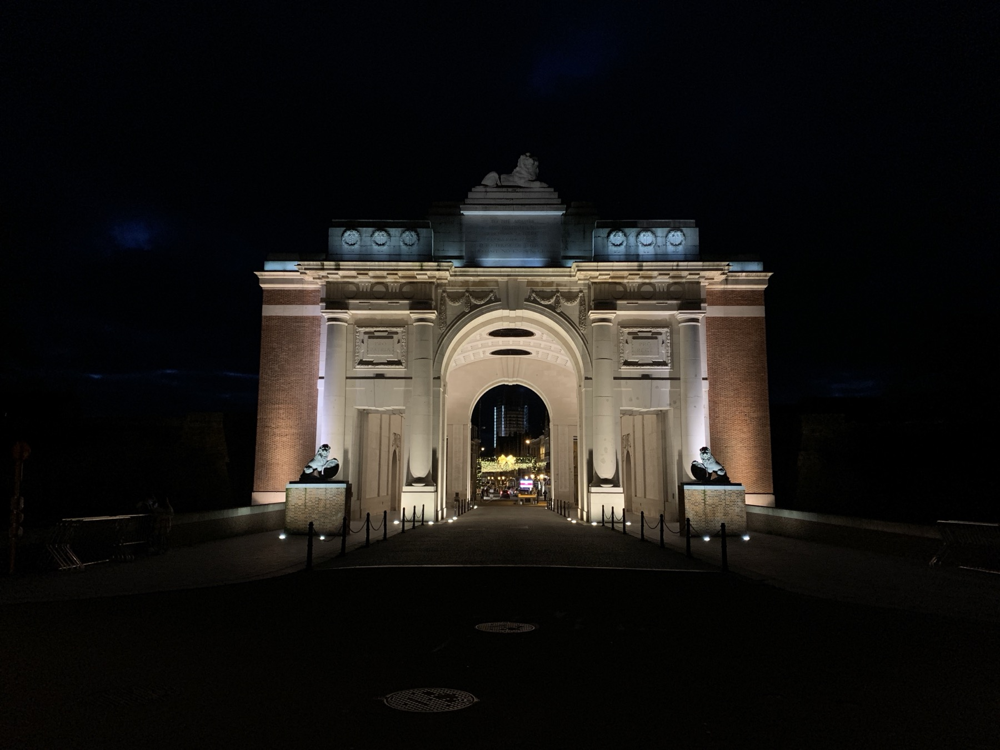
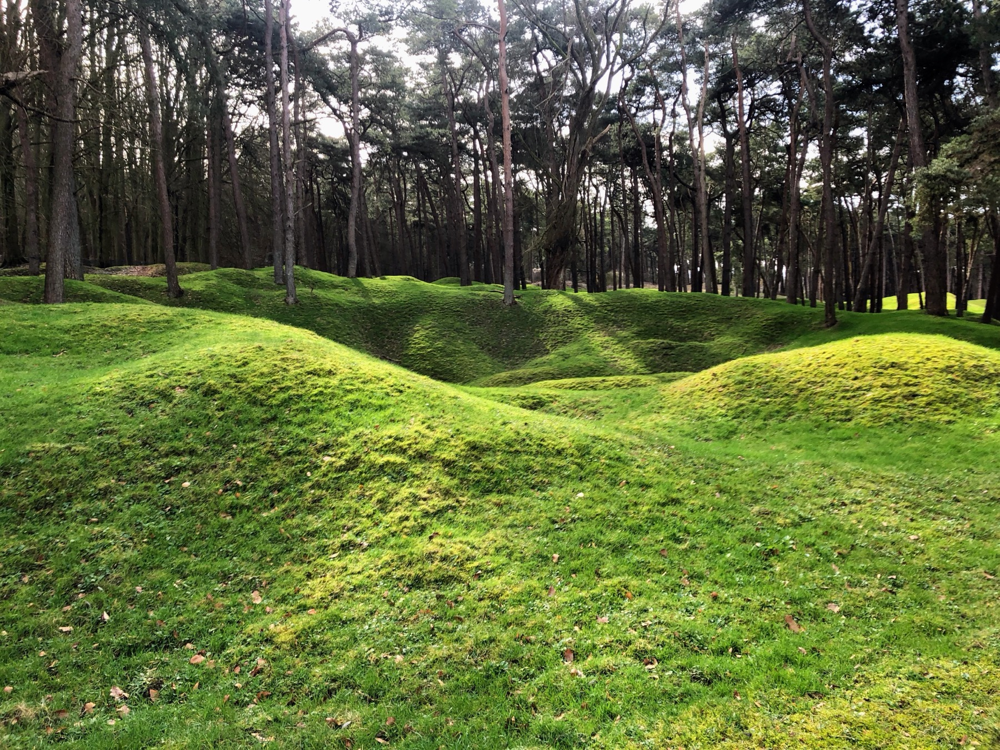

Vimy to Victory
Vimy Ridge's preserved trenches and the National Vimy Memorial.

“In Flanders Fields, the poppies blow...”
Home / Tours / In Flanders Fields
Journey through the infamous Flanders Fields battlefields and discover what inspired the war's most poignant poem. During the Great War, this small corner of Belgium witnessed some of the fiercest fighting of the First World War. Stand where Canadian soldiers stood facing chlorine gas clouds and went over the top through the mud and devastation of Passchendaele.
From the Christmas Truce battlefield of 1914 to the ridges and cemeteries of Flanders, this tour explores both the famous and not-so-famous side of Flanders Fields. Walk preserved trenches, visit battlefield memorials, and gain a deeper understanding of the sacrifices made by Canadian soldiers in Belgium. The day concludes with attendance at the moving nightly Last Post Ceremony beneath the Menin Gate Memorial in Ypres, where more than 54,000 missing Canadian and Commonwealth soldiers are commemorated.
Tour itineraries may be adjusted to accommodate weather, timing, or the interests of guests. This tour is also included within The Signature (2 Day) and The Ultimate (3 Day) Canadian Tours.
Vimy Ridge's preserved trenches and the National Vimy Memorial.

2 Day TourThis tour, combined with Vimy to Victory.

Add personal research on a relative who served to any tour.